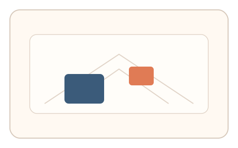
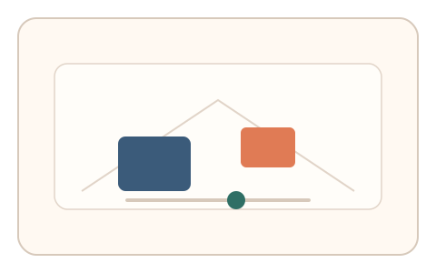
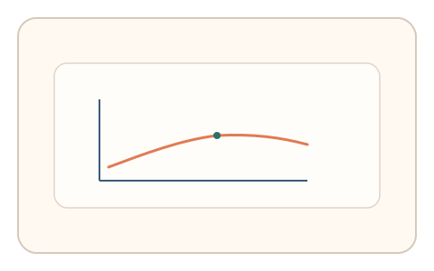

#64
视觉思考范式：Gestalt/对称/频率
已扩展
透视尺寸校准
在透视网格中调节远景物体大小，利用校准比例与微调路径验证大小恒常性偏差。
概念原文
透视网格中有近景与远景物体，用户调整远景物体大小直到“看起来一样大”。记录校准比例与微调路径。
以人类“大小恒常性”偏差作为信号。
研究背景
大小恒常性使人类在透视场景中维持对物体真实大小的估计，但会产生系统性偏差。通过测量远景物体的校准比例与调节路径，可获得稳定的感知信号。
核心机制
- 展示透视网格中的近景与远景物体。
- 用户调节远景物体大小直到看起来一致。
- 记录校准比例与微调步数。
- 分析大小恒常偏差与收敛曲线。
用户流程
- 步骤 1：用户看到透视场景与两物体。
- 步骤 2：用户调节远景物体大小。
- 步骤 3：系统记录比例并判定。
判定信号
校准比例与偏移方向
大小恒常性导致可预测的比例偏差。
微调步数与回撤节奏
真实校准通常伴随小幅回撤。
判定逻辑
评估校准比例与微调曲线是否落在人类范围；无偏差或一次到位判异常。
对抗面
- 脚本依据透视比例直接设置大小
- 重放真实用户的调节轨迹
防御与缓解
- 随机化透视角度与物体位置
- 加入轻微噪声与比例扰动
- 叠加微时序与轨迹信号进行多信号判定
可达性与风险
提供简化场景或键盘微调模式，避免对精细操作用户造成负担。
- 透视线索不足导致偏差增大
- 小屏设备影响深度感知
可视化状态

状态 1：透视场景
近景与远景物体处在透视网格中。

状态 2：尺寸调节
用户调节远景物体大小。

状态 3：比例判定
分析校准比例与微调路径。
参考资料
Size constancy
说明大小恒常与透视偏差。
Perspective (graphical)
说明透视线索与尺度感知。